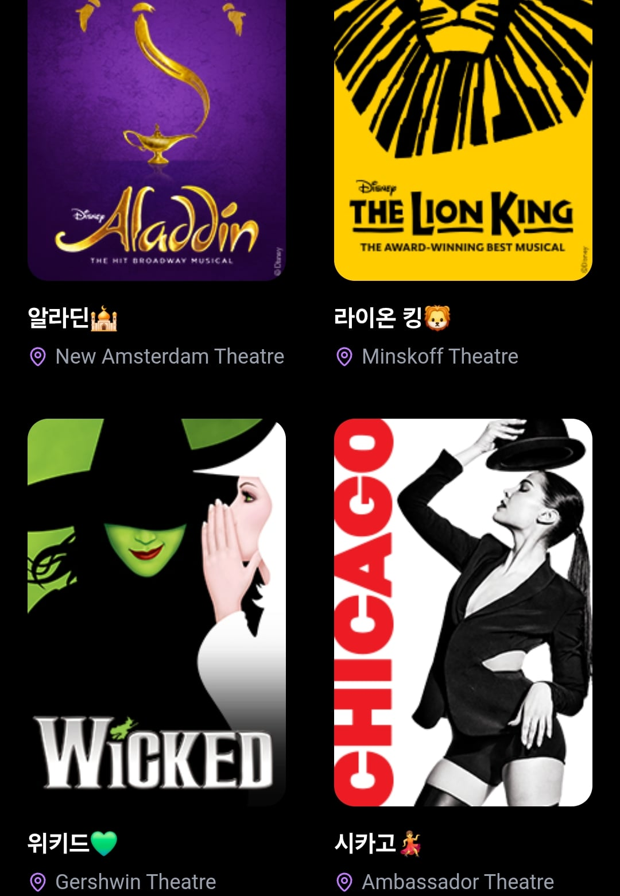
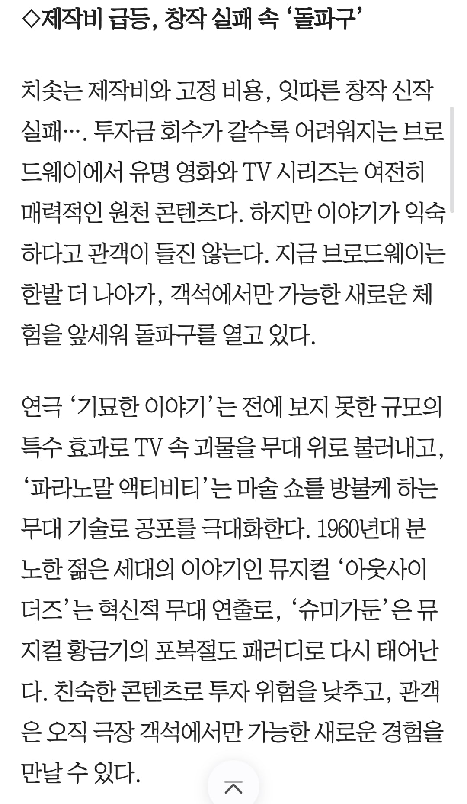
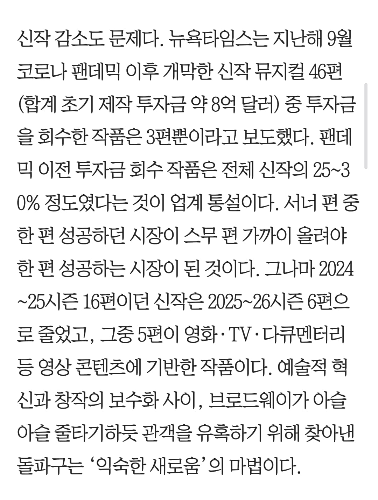
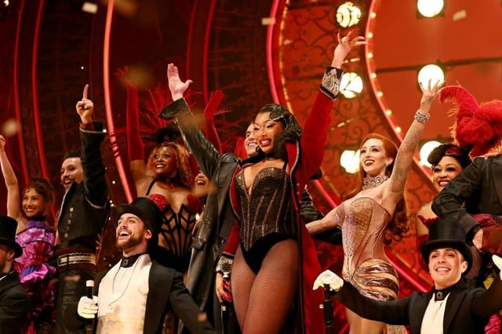
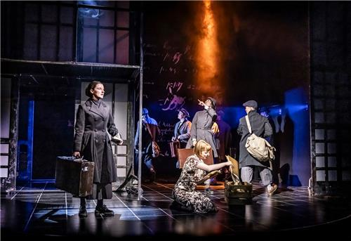
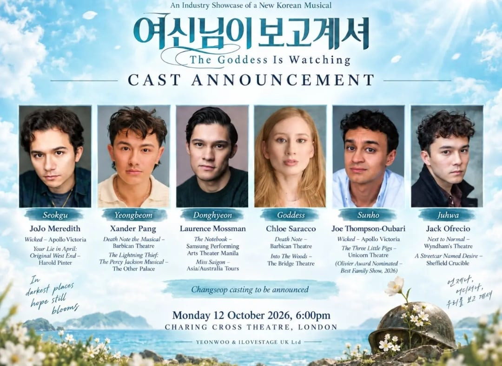
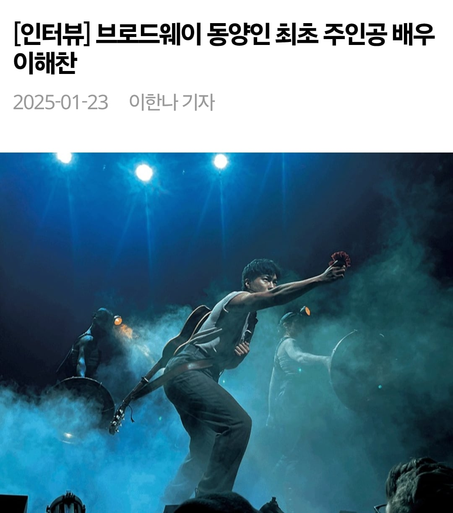

브로드웨이 뮤지컬에서 최근 부각되는 문제는 바로 연이은 창작 실패임.

대표적인 관광코스인 네 개의 뮤지컬
한번 히트하면 몇십년이고 롱런함 + 관광객들은 이미 이름난 뮤지컬만 봄 = 신생 뮤지컬은 망함
그래도 2010년대는 북 오브 몰몬, 해밀턴, 디어 에반 핸슨, 하데스타운 등으로 선방했지만, 최근엔 그마저 주춤하는 상황


그래서 이미 영화/드라마로 유명한 콘텐츠를 뮤지컬/연극화하거나(스파이더맨, 물랑 루즈, 기묘한 이야기, 파라노말 액티비티, 새리포터 등) 인기스타의 곡으로 뮤지컬을 제작(앨리샤 키스의 노래로 만든 헬스키친, 마이클 잭슨 노래로 만든 MJ, 여러 가수의 히트곡을 섞은 물랑루즈•앤줄리엣 등)해서 연명 중
이런 상황에서 한국의 뮤지컬 제작사, 창작자, 배우들이 재미를 좀 보고 있음
1. 아예 새 뮤지컬을 처음부터 올리는 경우
먼저 CJ의 계열사 CJ ENM은 2013년 킹키부츠 공동 제작으로 재미를 본 이후, 2020년 기존 영화 기반에 여타 히트곡 팝송들을 추가해서 집어넣은 뮤지컬 "물랑 루즈!"를 성공시킴.

한국에선 "지킬 앤 하이드", "스위니 토드", "데스노트" 등으로 유명한 OD컴퍼니도 2024년에 "위대한 개츠비"로 재미를 봤음
2. 한국에서 올리던 뮤지컬을 미국/영국에 가져가서 히트친다
제일 유명한 사례는 토니상 6관왕에 빛나는 "어쩌면 해피엔딩"
이 뮤지컬의 작사가 박천휴는 한국인 최초 토니상 수상자가 됨(극본상/음악상)
이 외에 소소한 진출을 많이 하고 있음

"마리 퀴리"

"여신님이 보고계셔" 를 비롯한 수많은 뮤지컬이 단발성 현지제작 공연이 많이 되는 중
3. 한국인 배우 개인의 진출
그동안 한국계 교포들이 무대에 오른 경우는 많았음

제일 최근 사례인 "하데스타운"의 주인공 오르페우스 역의 티모시 리(이해찬)
그런데 2026년에 한국인 배우 아이비가 "시카고"의 록시로 전격 캐스팅됨
한국에선 무려 여섯 차례나 록시 역할로 공연을 했고, 브로드웨이에서까지 공연을 하게 되었던 것
한국인 배우로 브로드웨이 무대에 주인공으로 진출한 건 이게 최초
한줄요약: 뮤지컬 보릿고개인 미국에서 한국인들이 재미좀 봤다

진주 좀 써줘